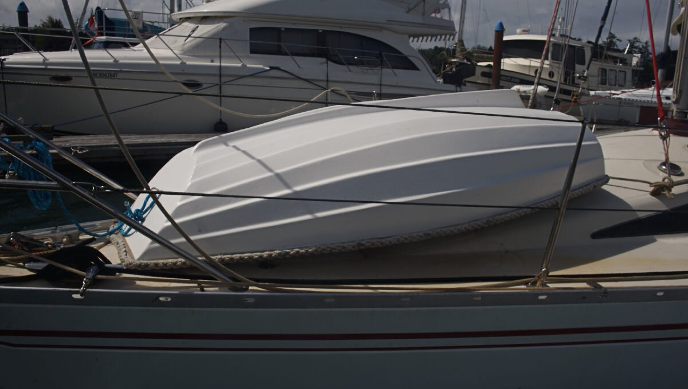

teapot

Our dinghy is named Teapot, acquired on August 9th 2021. It is made of fibreglass, and is 7 ft long. We bought it off Linda from SV Temenos. At the time it bore the name Mini T.
We like to take it out on solo trips in evenings, in calm weather.
We had an inflatable PVC dinghy for a while, named Iggy but it died in the South Pacific — PVC is a poor choice in warmer climates, if you want a sturdy dinghy choose Hypalon or a hard dinghy, or consider making UV-resistant tube covers for your PVC dinghy.

Teapot's pram shape allows it to fit well in front of our baby stay. When we move from one anchorage to the other, we always hoist it back up on deck, we never tow it. When anchoring, we tie a halyard to a strongpoint forward of the dinghy(visible in above photo), and lift it up (just the front) to have access to the anchor locker underneath. The aft portion of the dinghy is tied down, so it doesn't shift around when we sail, and because it's tied down at that point, it works as a fixed pivot to lift the dinghy, safely.
Sometimes we like to daydream about what life on the water could be like if no one had motors.

2022.05.28 Teapot spends a lot of time laying upside down on our deck. There is a metallic band on the top border of the stern, and so we added a protective rope map on the stern to help protect the fibreglass deck from nicks of scratches. Rek likes to make rope mats, and we had this one lying around. We added bolts with oversized washers to hold it down, bolted into the wooden frame of the dinghy (using the wooden outboard mount).
We also made a bridle, to make it easier to move Teapot from boat to water, or from water to boat. Teapot has two handles on the outside of its stern, and a ring (for towing) on the outside of the bow, we added lines to all 3 points with a closed loop sown on both ends. When we want to lift the dinghy, we take a halyard and run the shackle through each loop, and winch it up, or down from the cockpit. Someone has to go up front to help lead Teapot either off, or on the bow. When lifting the dinghy from water to Pino, we lay it on deck bottom down, and we have to go up front to flip it back over (we do that in reverse to put it back in the water).
2022.06.17 We found a crack in Teapot's keel.
We had noticed there was a weakness there before, a bit an indent in the material, but we did not think there was an actual hole. When hauling the dinghy up on deck, we noticed how heavy it sometimes got... that was because the inner compartment was half-filled with seawater. We thought the hole came from elsewhere, from the plug on the inside (used to empty water trapped in the inner compartment), but as soon as we'd pump the water out, in came more water. We think the hole enlargened itself, after we hauled the dinghy ashore over rocks, barnacles a few times this year. We cleaned up the hole and added some thickened epoxy to fill it. We hope to add either a strip of wood, or metal to the whole length of the keel so it doesn't get eaten up again.

2024.03.03. The seat that our dinghy came with had a very bad crack, we didn't much like the design so we didn't keep it. This year, someone in the marina put a dinghy seat in the trash, we rescued it and installed it on Teapot :)! We also added some carbon sheeting to the ends of the oars, and near where the fins start to re-enforce the wood. When rowing, we often hit the end of the oars on rocks when trying to get away from shore. While doing this project, we realized that one of oars wasn't the same length as the other...
teapot gelcoat
2025.02.27
North Saanich, B.C.
Before we bought Teapot the dinghy in 2021, the previous owner painted the bottom with latex house paint, an attempt at temporarily revitalizing it, we imagine. That was a terrible choice. When the dinghy was wet, the paint would come off, sometimes staining our clothes and hands. We desperately wanted to sand the paint off, but didn't know where we could take the dinghy to do it. We needed indoor space. Our good friends Rik & Kay offered up their workshop to us. Because the dinghy's bottom was damaged, we also decided that this would be a good time to learn how to apply gelcoat.
Gelcoat is a durable, UV-resistant, outer shell on fibreglass sailboats, used for the hull and deck. The gelcoat has a colour pigment in it(or sometimes separate, mixed in afterwards), usually white.
In September 2024, on our way to Victoria we stopped in Sidney to drop off Teapot so that Rik & Kay could take it home. We would do the work when our schedules permitted it, and when the weather was good. Rik had done gelcoat before(he built a small boat) and would teach us how to apply it correctly.
We took the bus over to their house on the 27th, bringing our vacuum-sander, coveralls and respirators along. Respirators were essential, polyester resin has a terrible odor. Coveralls were important too, they helped to protect our clothes(if you get gelcoat on fabric it will not wash off). Although, the coveralls did little to protect our clothes from the smell. The smell of gelcoat mixture permeated everything, it stayed on us for hours after leaving the workshop.
First Day
- 1. Clean
- 2. Let it dry
- 3. Sand the old paint off
- 4. Remove dust with rag, finish off with acetone
- 5. Mix gelcoat + catalyst, apply first coat
- 6. Wait for a few hours, then mix more gelcoat + catalyst and re-apply second coat
- 7. Clean gelcoat off brushes with acetone
On the first day, we cleaned the inside and outside of the dinghy. Teapot had been sitting outside for a few months, accumulating dirt and a healthy population of spiders. Then, we let the dinghy dry in the sun for a while before moving it off the grass and nearer to the house so we could power the sander. We spent many hours removing the paint, alternating between using a powered vacuum sander, hand sanding with a block, or a carbide scraper(careful not to make holes in the gelcoat underneath). The hand sanding and scraper were more forgiving, it was easy to get carried away with a powered sander and to sand through the old gelcoat.
After removing all of the paint, we cleaned most of the dust off with a wet rag, let it dry, then removed the remaining dust with some acetone. When the dinghy was clean, we moved it inside the workshop to start on the gelcoat.
To do gelcoat, we used 1 and 1/2 L cans of white unwaxed polyester gelcoat(by Industrial Plastics & Paints in Victoria), and a small bottle of Methyl Ethyl Ketone Peroxide (MEKP, the catalyst for polyester resin), a few foam rollers and brushes. Rik had some gelcoat left over from another project, so we used that up first, and then used the entire second liter.
We covered the sections we wanted to protect(wooden and metal trims) with tape, and applied the first coat that same afternoon using a foam roller, and a small brush for the edges. After coating each rib(our dinghy is ribbed), we would do a long gentle pass, what I'll call the 'finishing stroke', across the length of each rib to spread any remaining thick globs of paint.
We applied a second coat later in the evening, after dinner. Because there was already one coat on, it was harder to see where we had already painted. A good sign that we had missed a spot was when applying the finishing stroke, the foam roller would catch on areas with too little paint.
Second Day
- 1. Mix gelcoat + catalyst, apply third coat.
- 2. Wait for a few hours(we helped Kay pick up cut branches from pruned fruit trees, while fighting off an aggressive goose)
- 3. Mix gelcoat + catalyst, apply fourth coat.
- 4. Clean gelcoat off brushes with acetone
The next morning, we applied yet another coat, although we had run out of foam rollers and decided to try and use a brush to apply the gelcoat (and to see the difference in texture). The process was the same, finishing strokes were especially important because if we weren't careful brushes could leave enormous streaks.
For large flat areas, like the stern, we used a slightly different technique. Once the whole surface had a coat of paint, we would do diagonal finishing strokes along the surface, from one end to the other, then once we had done the whole surface we would make diagonals again but in the other direction. Making diagonal finishing strokes helped to hide the brush marks.
After waiting for the coat to dry, we went to help our friend Kay pick up cut branches from pruned fruit trees, while fighting off an aggressive gander. The other geese didn't care, but that one would not leave us alone. We had to chase it away every 10 minutes. We knew the goosey gander was close because we would hear them hissing at our backs.
We added another coat later in the afternoon.
Third Day
- 1. Mix gelcoat + catalyst, apply fifth coat(ran out of gelcoat)
- 2. Clean gelcoat off brushes with acetone
- 3. Go home and wait
We added a last coat the next morning. We left the dinghy in the workshop with plans to come back to their house later to finish the work
To build up the gelcoat, we used up 1 1/2 L of material.
Final
We came back later and mixed white waxed polyester gelcoat(500 ml can) with some catalyst, and applied a final coat using a foam roller. The unwaxed gelcoat does not cure on its own, it needs a topcoat or something to seal it(it doesn't cure when exposed to air). An alternative to wax is to put a film of PVA (Poly Vinyl Alcohol) to allow the gelcoat to cure.
